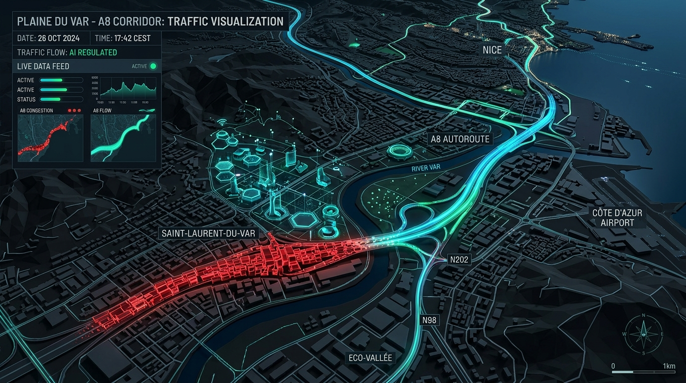

Une doctrine stratégique rédigée pour M. Éric Ciotti : Rigueur budgétaire (2,5 M€/an net d'économies d'audit), sécurité augmentée au CSU, alliance transfrontalière avec Monaco, cofinancement européen et budget maîtrisé.

Une doctrine d'austérité intelligente : économies budgétaires certifiées en premier, suivies des compétences Ville et Métropole.
Ingestion sémantique et contrôle automatisé à 100 % des bordereaux de prix unitaires (BPU), devis et factures métropolitains.
Régulation prédictive du chauffage, de la climatisation et de l'éclairage public sur les 400+ bâtiments municipaux.
Dispatching intelligent et routage prédictif des véhicules de collecte, de voirie et des patrouilles de la Police Municipale.
L'analyse sémantique automatique des factures et contrats détecte 0,5 % à 2 % de doublons et surcoûts sur la commande publique.
L'éclairage adaptatif et la régulation CVC prédictive réduisent la facture énergétique municipale de 20 % à 50 %.
Le routage dynamique IA des bennes et véhicules réduit de 37 % les distances et de 30 % les coûts logistiques.
Les assistants vocaux 24/7 absorbent 40 % des demandes répétitives sans files d'attente téléphoniques.
Une synergie tripartite d'excellence entre les fonds et le cloud de la Principauté, la puissance du CSU niçois et la Zone Franche Transfrontalière.
Les mairies sont devenues les cibles privilégiées des ransomwares. Nice déploie une défense souveraine active par l'IA.
Agents IA autonomes détectant en temps réel les tentatives d'intrusion et d'exfiltration de données sur le réseau municipal.
Mise à disposition d'un environnement IA souverain local étanche et blocage des IA grand public non sécurisées.
Partitionnement hermétique des flux vidéo du Centre de Supervision Urbain pour empêcher tout piratage à distance.
Sauvegardes chiffrées hors-site sur le 1er cloud souverain d'État d'Europe sous juridiction monégasque.
Ajustez le volume des achats de la Métropole pour visualiser l'impact direct de l'audit IA sur le budget public.
Des étapes datées et mesurables pour un déploiement sans délai.
Annonce officielle du plan par M. Éric Ciotti. Nomination de l'AMO IA (Benoît Sigwald). Lancement du Bouclier Cyber-IA et des projets pilotes CSU Vidéo VSA + Audit des marchés publics. Dépôt du dossier Digital Europe.
Mise en production des 5 cas d'usage Quick Wins (Allo Séniors IA, Propreté, Audit, Mobilité Monaco, Cyber). Bilan financier certifié démontrant > 2,5 M€ d'économies réalisées. Signature du protocole Ville Franche IA avec Monaco.
Nice consacrée 1ère métropole de France pour la sécurité urbaine intelligente, la sobriété budgétaire par l'IA et l'alliance transfrontalière européenne.
La Ville de Nice et la Métropole NCÀ hébergent aujourd'hui leurs systèmes d'information dans des datacenters propres ou loués à coût élevé. La migration progressive vers le Monaco Cloud — 1er cloud souverain d'État d'Europe — libère entre 1,5 M€ et 2,8 M€/an de budget IT réaffectables aux services publics.
Rennes Métropole a mutualisé 26 communes sur un cloud partagé géré par son DSI. Résultat : -38 % des coûts d'hébergement et +45 % de disponibilité des services. Économie annuelle constatée : ~1,1 M€/an pour 220 000 habitants.
Grand Lyon et Bordeaux Métropole ont abandonné leurs serveurs on-premise pour un modèle SaaS/IaaS mutualisé. Réduction des coûts de maintenance des licences et du matériel : -32 % à -45 % du budget IT dédié aux serveurs en 3 ans. Bordeaux : économie de 900 k€/an sur un parc de 8 000 agents.
En s'appuyant sur le Monaco Cloud (norme AMSN, HDS, ISO 27001), Nice évite l'investissement d'un nouveau datacenter propre estimé à 8-12 M€ de CAPEX et 1,2-1,8 M€/an d'OPEX (maintenance, énergie, personnel). La liaison souveraine Monaco Cloud ↔ CSU Nice est en outre conforme NIS 2.
IA VSA sur 4 300+ caméras : détection instantanée et réaffectation des policiers sur le terrain.
Impact : Incivilités -65 %Contrôle à 100 % des factures métropolitaines, devis et BPU pour éliminer le gaspillage.
Gain Net : 2,50 M€ / an certifiésSOC 24/7 souverain & étanchéité CSU contre les attaques par ransomware.
Valeur : 1,8 M€ à 3 M€/an de crise évitésMigration souveraine du SI municipal vers Monaco Cloud : 1,5-2,8 M€/an de budget IT libéré + 8-12 M€ de CAPEX datacenter évité.
Économie IT : 1,5-2,8 M€/an + 8-12 M€ CAPEX évité500 k€/an de Budget IA total (100k Ville / 150k Métropole / 250k Monaco ZF), intégralement co-financé par l'UE (Digital Europe, Horizon, FEDER).
Budget IA Total : 500 k€/an — Co-financé UE